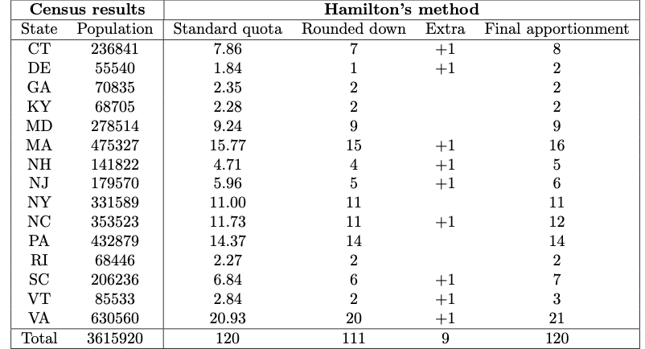

The Apportionment Problem
Brian Lins
Hampden-Sydney College
Monday, June 3, 2024
The Apportionment Problem
Here is what the Constitution says about how the seats of the House
of Representatives are to be apportioned to the states:
The House of Representatives shall be composed of Members chosen
every second Year by the People of the several States, and the Electors
in each State shall have the Qualifications requisite for Electors of
the most numerous Branch of the State Legislature.
No Person shall be a Representative who shall not have attained to
the Age of twenty five Years, and been seven Years a Citizen of the
United States, and who shall not, when elected, be an Inhabitant of that
State in which he shall be chosen.
Representatives and direct Taxes shall be apportioned among the
several States which may be included within this Union, according to
their respective Numbers, which shall be determined by adding to the
whole Number of free Persons, including those bound to Service for a
Term of Years, and excluding Indians not taxed, three fifths of all
other Persons.
What Does It Mean?
The wording here is vague. What does it mean that Representatives
shall be apportioned among the several States… according to their
respective Numbers?
From the beginning, it was understood that this means the number of
representatives should be proportional to the population of the state.
If a state is twice as big, it should have twice as many
representatives.
Proportional Representation is Tricky
The problem is, there are only 435 seats in the House of
Representatives. Those cannot be divided perfectly proportional to the
populations of every state.
The First Apportionment
The 1st Census of the United States took place in 1790. The results
were as follows:

The House was aiming for 30,000 people per representative with 112
total representatives. The Senate was aiming for 33,000 people per
representative with only 105 total representatives.
The Math
The formula to calculate the quota for each state is very simple.
Quota = Population/Divisor
Jefferson’s Method
The method advocated by Thomas Jefferson involved these steps:
Calculate the quotas for each state.
Round all the quotas down. If that is the right total number of
seats, you are done, otherwise do step 3.
Adjust the divisor and repeat steps 1 & 2 until you get the
right total number of seats in the House of Representatives.
The Debate
There was a lot of debate about whether the House or Senate
apportionment bill was better.
Several states argued that in the House bill, Virginia got too many
seats. Here’s why. In the House bill, there were supposed to be 112
seats in Congress. Since the population of the US was 3,615,920, the
size of a congressional district should be
d = 3, 615, 920 people/112
representatives = 32, 285 people per representative.
This is called the standard divisor which you always
get by dividing the who population by the number of seats.
Virginia’s Quota Violation
Using the standard divisor, Virginia has a standard
quota of Quota = Population/Divisor = 630, 560/32, 285 = 19.531.
But since the method used to calculate the quota did not use the
standard quota, Virginia ended up with 21 seats.
Virginia would get more seats than its standard quota rounded up.
When a state gets more seats than its standard quota rounded up or less
than its standard quota rounded down, that is called a quota
violation.
Hamilton’s Method
Alexander Hamilton thought it was unfair for Virginia to get more
seats than it deserved. He persuaded Congress to pass a bill using a
different method which is now called Hamilton’s
method.
Calculate the standard quotas using the standard
divisor.
Every state gets at least their standard quota rounded
down.
If there are seats left over, give one to each of the states with
the highest decimal part in their quotas until they are used
up.
The Apportionment Act of 1792
Using Hamilton’s method, Congress agreed on 120 representatives so
the standard divisor would be 3, 615, 920/120 = 30, 132.67 people per
representative.

The First Veto
Thomas Jefferson argued that it would be more fair to adjust the
divisor (typically by making it a little smaller) so that the quotas can
all be rounded down. He was worried that states would argue about who
would get the extra seats. George Washington agreed with Thomas
Jefferson and so he vetoed the Apportionment Act.
Instead, the original Senate bill for a House of Representatives with
105 seats apportioned using Jefferson’s method was settled on.
Jefferson’s method was used from 1790 through 1832.
Washington’s Explanation
Gentlemen of the House of Representatives:
I have maturely considered the act passed by the two Houses entitled
“An act for an apportionment of Representatives among the several States
according to the first enumeration,” and I return it to your House,
wherein it originated, with the following objections:
First. The Constitution has prescribed that Representatives shall be
apportioned among the several States according to their respective
numbers, and there is no one proportion or divisor which, applied to the
respective numbers of the States, will yield the number and allotment of
Representatives proposed by the bill.
Second. The Constitution has also provided that the number of
Representatives shall not exceed I for every 30,000, which restriction
is by the context and by fair and obvious construction to be applied to
the separate and respective numbers of the States; and the bill has
allotted to eight of the States more than I for every 30,000.
GO WASHINGTON.
Webster’s Method
In 1842, Congress used Webster’s method to apportion
the seats of Congress. Webster’s method and a competing method proposed
by John Quincy Adams (called Adam’s Method) are very
similar to Jefferson’s method. The only difference is in how you round
the quotas:
In Jefferson’s method, you always round quotas down (but never
less than one).
In Adam’s method, you always round quotas up.
In Webster’s method, you round the normal way.
Hamilton’s Method Returns
In 1852 Congress passed a law making Hamilton’s method the “Official”
method for apportionment. But weird things can happen with Hamilton’s
method. This was first discovered in 1882.
Congress was trying to pick how big the House of Representative
should be.
With 299 seats, Alabama got 8 seats.
With 300 seats, Alabama only got 7 seats.
Adding a seat would cause Alabama to lose a seat.
Congress decided to avoid the issue in 1882 by choosing 325 seats
(where both Hamilton’s method and Webster’s methods gave the same
apportionments).
Alabama Paradox
It is really weird that adding more seats to Congress can cause a
state to lose a seat! This is called the Alabama
paradox.
The same paradox happened again in 1901. That year the Census Bureau
presented Congress with tables showing what the apportionment would be
if the size of the House of Representatives was any number between 350
and 400. For most options Maine got 4 seats, but if the House had 357,
382, 386, or 389 seats, then Maine would only get 3 seats. Something
similar happened where Colorado would get either 3 seats or 2 depending
on the size of Congress. Coincidentally, the proposed size of the House
of Representatives was going to be 357 which would have negatively
affected both Maine and Colorado.
After a huge debate, Congress chose to use Webster’s method.
Other Paradoxes
There are other weird things that can happen with Hamilton’s
method.
Population Paradox. If the populations of the
states change, then a state that grows might lose a seat to a state that
doesn’t grow (or even shrinks)!
New States Paradox. When new states get added to
the country, even if you increase the number of representatives by
enough to cover the new states, the apportionment of representatives to
the old states might change.